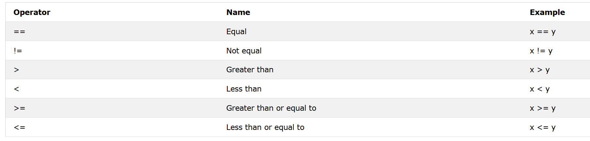

Introduction to Python¶
Python is a relatively easy language to learn as it shares a lot of similarities with MATLAB. When we want to create neural networks and ai algorithms, its much easier to use Python as the programming language as you have access to many more tools and support than you would have with MATLAB. Whilst MATLAB is a nice integrated environment that does has excellent support, you are often dependent on the packages that they release and the overall support for machine learning tools is definitely limited when compared to the Python development environment. Python is nice because you have access to many open-source libraries that have pre-written functions that make your life a lot easier.
A basic example of this is something like the linspace function in MATLAB, upon loading MATLAB you’ll be able to type into the command window ‘ a = linspace(0,10,10)’ and it will store a variable a and print it out. Python works a little differently. Out of the box the linspace function is not present in the python libraries, but instead you can ‘import’ a library that gives you that same functionality. In the cell block below, we import a module named ‘numpy’. This is a very popular package which contains a lot of the data manipulation tools you typically find and use in MATLAB. In python at the top of the document, it is good practice to import all of the libraries that you will use in the rest of your algorithm.
There are a bunch of different libraries people use to develop machine learning algorithms, from PyTorch, TensorFlow, Keras, FastAI etc etc, they all have positive attributes and negative attributes and quite often its a matter of preference which one you should use. I tend to use Keras to develop my models as it uses a simple syntax to write the code (functions are elegantly written and easy to understand), it shared the most comparisons with MATLAB so made sense in my head and gives you all of the flexibility you could ever really need .
Importing Modules and Interacting with them¶
import numpy
Here we have imported numpy, and therefore have access to all of the functions that exist within the numpy module - see the documentation for all the info https://numpy.org/doc/stable/reference/routines.math.html. But a useful function that is built into Python is one called dir. This function can be used to show the entire directory of a module and list all of the functions that exist within it. So if we call dir(numpy), all attributes associated with the numpy module will be printed and you can then select the function that suits your needs. If you are unsure as to what any of the functions do, then often you can call the help function. Which again is built into Python. So if we consider the linspace example again, we can call help(numpy.linspace):
help(numpy.linspace)
Help on function linspace in module numpy:
linspace(start, stop, num=50, endpoint=True, retstep=False, dtype=None, axis=0)
Return evenly spaced numbers over a specified interval.
Returns `num` evenly spaced samples, calculated over the
interval [`start`, `stop`].
The endpoint of the interval can optionally be excluded.
.. versionchanged:: 1.16.0
Non-scalar `start` and `stop` are now supported.
Parameters
----------
start : array_like
The starting value of the sequence.
stop : array_like
The end value of the sequence, unless `endpoint` is set to False.
In that case, the sequence consists of all but the last of ``num + 1``
evenly spaced samples, so that `stop` is excluded. Note that the step
size changes when `endpoint` is False.
num : int, optional
Number of samples to generate. Default is 50. Must be non-negative.
endpoint : bool, optional
If True, `stop` is the last sample. Otherwise, it is not included.
Default is True.
retstep : bool, optional
If True, return (`samples`, `step`), where `step` is the spacing
between samples.
dtype : dtype, optional
The type of the output array. If `dtype` is not given, infer the data
type from the other input arguments.
.. versionadded:: 1.9.0
axis : int, optional
The axis in the result to store the samples. Relevant only if start
or stop are array-like. By default (0), the samples will be along a
new axis inserted at the beginning. Use -1 to get an axis at the end.
.. versionadded:: 1.16.0
Returns
-------
samples : ndarray
There are `num` equally spaced samples in the closed interval
``[start, stop]`` or the half-open interval ``[start, stop)``
(depending on whether `endpoint` is True or False).
step : float, optional
Only returned if `retstep` is True
Size of spacing between samples.
See Also
--------
arange : Similar to `linspace`, but uses a step size (instead of the
number of samples).
geomspace : Similar to `linspace`, but with numbers spaced evenly on a log
scale (a geometric progression).
logspace : Similar to `geomspace`, but with the end points specified as
logarithms.
Examples
--------
>>> np.linspace(2.0, 3.0, num=5)
array([2. , 2.25, 2.5 , 2.75, 3. ])
>>> np.linspace(2.0, 3.0, num=5, endpoint=False)
array([2. , 2.2, 2.4, 2.6, 2.8])
>>> np.linspace(2.0, 3.0, num=5, retstep=True)
(array([2. , 2.25, 2.5 , 2.75, 3. ]), 0.25)
Graphical illustration:
>>> import matplotlib.pyplot as plt
>>> N = 8
>>> y = np.zeros(N)
>>> x1 = np.linspace(0, 10, N, endpoint=True)
>>> x2 = np.linspace(0, 10, N, endpoint=False)
>>> plt.plot(x1, y, 'o')
[<matplotlib.lines.Line2D object at 0x...>]
>>> plt.plot(x2, y + 0.5, 'o')
[<matplotlib.lines.Line2D object at 0x...>]
>>> plt.ylim([-0.5, 1])
(-0.5, 1)
>>> plt.show()
This is obviously useful as it explains what the function itself does, and how it works. I used to use this all the time when I coded in MATLAB and it makes my life a lot easier in Python too. It also shows a bunch of examples at the end which is useful. So then in a similar fashion to MATLAB, we can define a linearly-spaced vector with 10 elements between 0 and 10 called ‘a’ in Python as follows:
a = numpy.linspace(0,10,10)
We can then ‘print’ the value of a into the command line by simply typing print(a). Note that when you define a variable python will not immediately print it into the command window and as such there is no need for the ‘;’ to terminate the output like you do in MATLAB. Here, we can use the semi-colon to write multiple lines of code on the same line as:
a = numpy.linspace(0,10,10); b = numpy.linspace(0,20,10)
print(f'a = ', a)
print(f'b = ', b)
a = [ 0. 1.11111111 2.22222222 3.33333333 4.44444444 5.55555556
6.66666667 7.77777778 8.88888889 10. ]
b = [ 0. 2.22222222 4.44444444 6.66666667 8.88888889 11.11111111
13.33333333 15.55555556 17.77777778 20. ]
Note
That random f at the start of the print function, is known as a formatted string. It is useful because it allows you to combine a string and a variable easily without having to convert the variable into string format.
Types of Variables you will find in Python¶
You probably noticed that I did something weird in the print function when printing the variable. This was just so that the output looks nicer but raises an important point about variable types in Python. In Python, a variable can exist in any of five key formats:
Numeric (integer, float, complex number)
Dictionary
Boolean (True/False)
Set
Sequence Type (strings, list, tuple).
You may or may not end up using a lot of these. But it is good to have some understanding of what kind of variable you are interacting with, especially if ever you run into problems with your code and need to start troubleshooting. Often a good place to start is just to double check what type your variable actually is. With that in mind, lets look at a couple examples:
c = 4
c1 = 4.3
d = 'This is an example of a string!'
e = True
f = '4'
Here we have defined a bunch of different variables, by using the type function we can confirm what variable c is by simply writing type(c). We see that it is an integer as you’d expect. This is important because you can therefore interact with this variable as you would expect with any number i.e. add, multiply, subtract and divide etc etc.
type(c)
int
Here I’ll use those formatted strings again just to show the data types of the other variables.
print(f'Variable c is a',type(c),'.')
print(f'Variable c is a',type(c1),'.')
print(f'Variable c is a',type(d),'.')
print(f'Variable c is a',type(e),'.')
print(f'Variable c is a',type(f),'.')
Variable c is a <class 'int'> .
Variable c is a <class 'float'> .
Variable c is a <class 'str'> .
Variable c is a <class 'bool'> .
Variable c is a <class 'str'> .
Note that variables c and f are both equal to 4. However it is important to understand that they are different variable types. See what happens when we add them to themselves.
c2 = c + c
f2 = f + f
print(f'c + c = ',c2)
print(f'f + f = ',f2)
c + c = 8
f + f = 44
You’ll notice that for the string case it has literally added the variable next to itself. This would obviously be problematic if you were writing some code that was expecting the value to be 8. Python is very flexible and is extremely good at working with different types of data allowing you to code up all sorts of funky things without the same limitations that MATLAB gives you. But it’s important to be aware of this kind of stuff.
Tip
We could convert the string object to an integer by calling int(variable) and Python will attempt to convert the variable to integer format. Note that this will only work if the string contains only numbers, as you might expect it would be impossible to convert a string containing letters to numeric format.
Similarly, this example indicates the same thing - however this time it is more obvious that it is a string and (depending on the program) this operation might be something that we would actually want to do:
print(d+d)
This is an example of a string!This is an example of a string!
Loops and Conditional Statements¶
If you’re using MATLAB chances are you’re very familiar with creating loops to do a bunch of different things. I’ll do my best to explain how loops and things work in Python because it is very similar but with a few differences. I’ll start with a couple of simple example and maybe spend a moment looking at it to see what is going on - then ill explain them in a bit more detail.
for i in numpy.linspace(0,4,5):
print(i)
0.0
1.0
2.0
3.0
4.0
for i in range(5):
print(i)
0
1
2
3
4
Note
Range function uses integer values, linspace creates floats (float includes decimal).
fruits = ['apple','banana','cherry','grapefruit']
for x in fruits:
print(x)
apple
banana
cherry
grapefruit
The Break statement¶
We can stop the loop early once a condition has been met. Note that conditions can be used with the Boolean data type, so if something is ‘True’ or ‘False’ - do something!
fruits = ["apple", "banana", "cherry"]
for x in fruits:
print(x)
if x == "banana":
break
apple
banana
Tip
Note that the print function is present before the break, if this was the other way around the loop would not print ‘banana’!
Python Assignment Operators¶
You’ll probably have noticed in the example above that the conditional equal statement in Python is written as ‘==’ with two equal signs. Here is a list of other operations you might find yourself wanting to use:

These expressions are flexible and you can use them in whichever way you desire to form your algorithms.